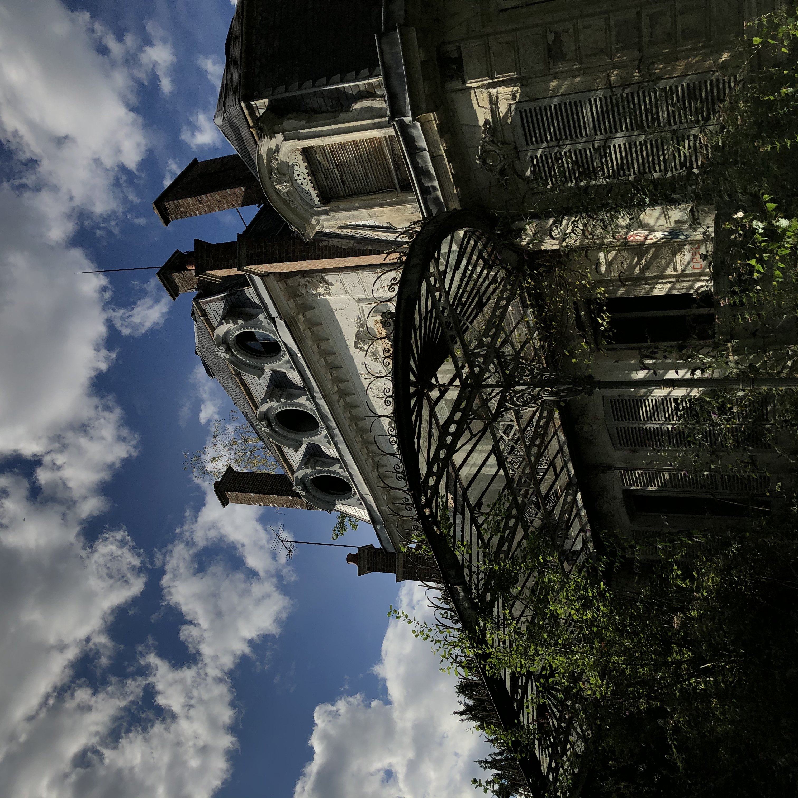

Pour accompagner votre lecture, un titre que j'affectionne tout particulièrement.
Hans Zimmer performs INCEPTION "Time" - The World of Hans Zimmer
La photographie
Je suis intéressée par la photographie depuis toujours et j'ai enfin décidé d'investir
dans du nouveau matériel cette année.
Avant ma mise à niveau, je prenais des photos avec mon téléphone ce qui rendait de jolies
photos, je prends dorénavant des clichés avec un appareil photo argentique qui appartenait à
ma mère dans les années 90. Mon appareil actuel est un Pentax Pi noir. J'utilise des
pellicules 135 mm, ces dernières sont assez chères mais le résultat est plutôt
impressionnant et la sensation de la photo argentique est totalement différente de la photo
numérique. Nous n'avons droit qu'à un seul essai et chaque photo est unique.
Nom
Sensibilité
Poses
Couleurs
Kono! Donau 6 iso
6 iso
24
Bleu/violette
Fujichrome Velvia 50
50 iso
36
Saturées, vibrantes
Kodak Ektar 100
100 iso
36
Très réaliste, ombres parfois bleutées
Agfa Color Ultra 100
100 iso
36
Intenses
Color Implosion Surreal CN (100 – 400)
100 iso
36
Gris granuleux
Kodak Elite Chrome 100
100 iso
36
Ombres un peu bleues
Fuji Provia 100F
100 iso
36
Intenses, contrastées
L'urbex
Le terme « urbex » est une contraction du terme Urban Exploration. C'est une activité
qui consiste à visiter des lieux construits et abandonnés par l'homme. J'ai débuté cette
activité en début d'année et depuis dès que j'ai un peu de temps libre, j'aime chercher des
lieux abandonnés et les visiter avec un ami d'enfance.
Elle me permet d'allier ma passion pour la photo et ma curiosité. C'est une activité
intéressante qui permet d'allier la peur mêlée et l'enthousiasme découverte de lieux
qui ont une histoire riche. Voici des lieux qui m'ont particulièrement marquée :

Les jeux-vidéos
Depuis toute petite, je baigne dans l'univers des jeux-vidéos, j'ai d'abord été
une
joueuse console en commençant sur la mega-drive de Sega puis je suis rapidement passée aux
consoles Nintendo avant d'acheter, il y a 2 ans, un pc performant pour jouer à des jeux
plutôt gourmands dans la configuration requise. Je joue majoritairement à des FPS (First
Person Shooter) et à des jeux de survie en sand-box. Voici par exemple un de
mes clips :